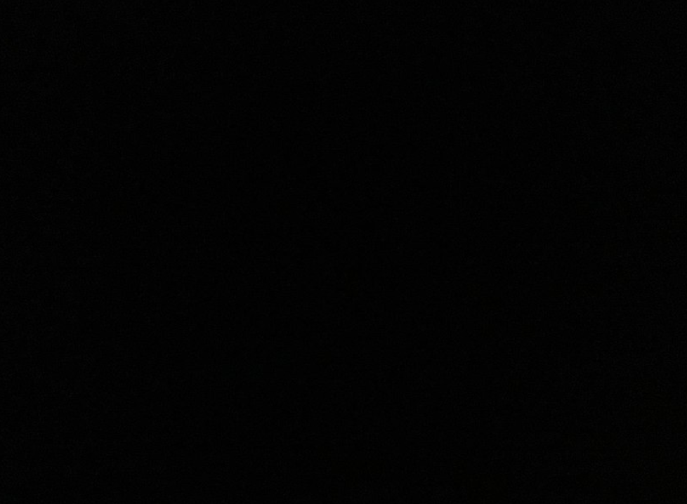
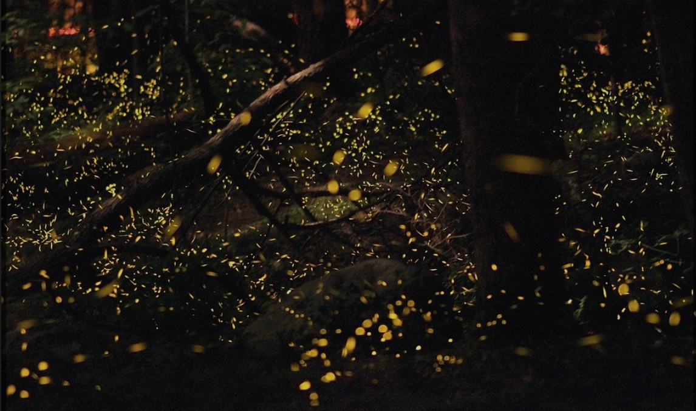

Bioluminescence For Dummies

For my EPQ I am designing a website and a game with the theme of Bioluminecence. First Draft.
Bioluminescence is a natural chemical process which allows living things to produce light in their body. It occurs in many living creatures, some of which you may be very familiar with. This is a bioluminescent octopus, or (if you’re fancy) Stauroteuthis Syrtensis . My personal favourite name for it, however, is the “glowing sucker octopus”. They are a small species of octopus which live in the depths of the North Atlantic Ocean - the ocean between North America and Europe. What makes these octopus really special is the fact that they are one of two types of octopuses which can glow, and because they live so deep, we know relatively little about them!

Here is another animal you will probably be familiar with - fireflies!
Like the Glowing Sucker Octopus, fireflies also use bioluminescence and this is why they glow yellow. However, we know much more about firelfies.
Over the next pages of this website we will look more closely at bioluminescence, this will include:
- A deep dive into different Organisms which use bioluminescence.
- Incredible phenomena like the Sea of Stars and how bioluminescence causes them.
- Groundbreaking reasearch and theories on the evolution of bioluminescence.
- A more in depth scientific analysis.
- A mini quiz to test your new knowledge.
- And finally a test to find out which bioluminescent animal YOU are!